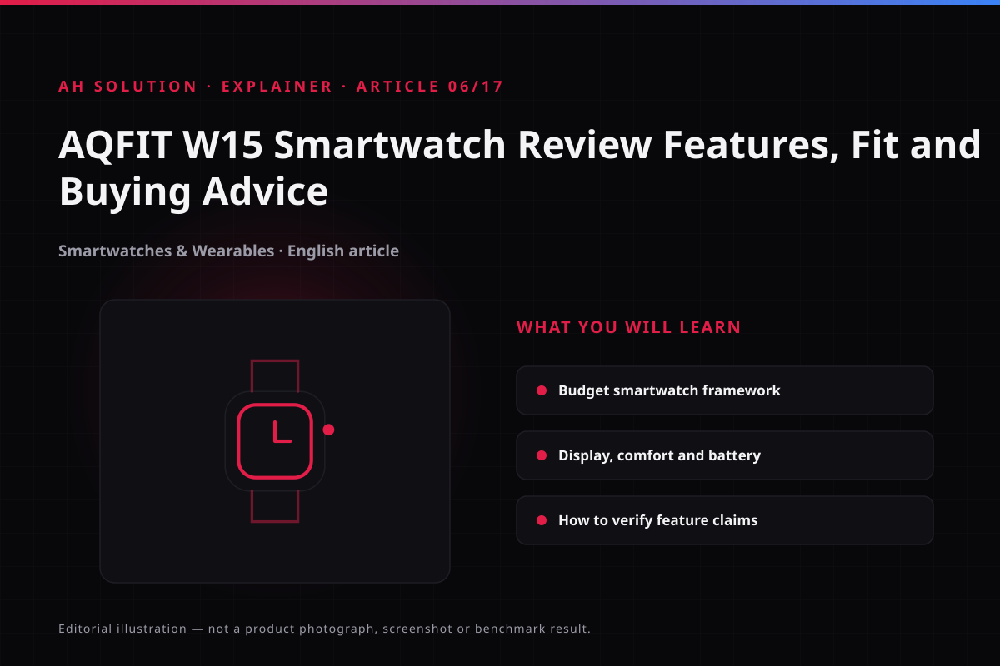

Budget smartwatches suit people who want basic fitness tracking and notifications without a large outlay, and the AQFIT W15 is a 2021 model from that category. This article places the video in context and offers a practical buying framework.
Budget smartwatches change quickly — models are discontinued and prices move — so no exact figures have been invented here. The article explains what to check and links to budget-smartwatch-checklist.html for comparison.
The source video is a short unboxing and review. It records what the watch looked like and what it claimed at the time; its specifications have not been re-measured. Treat every number in the title as a 2021 claim.
Original video: AQFIT W15 Smartwatch Unboxing & Review ⌚ | Best Smartwatch Under ₹3,000? Video published: 2021-06-24T16:34:44Z · Duration: 04:50
What matters when buying a budget smartwatch
A budget watch should not be bought on looks alone. The points below use the AQFIT W15 as an example.
The "under ₹3,000" claim in the video belongs to the 2021 context. In 2026 the price and even the availability of the same model may be uncertain, so verify the current price on the official listing.

Display, build and comfort
A smartwatch has to be worn every day, and an uncomfortable one will not be worn however good the feature list is.
What to check:
- Display readability: whether it stays visible outdoors and the brightness is adequate in daylight.
- Strap quality: silicone straps suit daily wear, but quality varies between budget models.
- Size and fit: the case should suit your wrist size; a heavy watch becomes uncomfortable over long wear.
- Water resistance: if an IP rating is quoted, understand its exact scope (splash-proof versus swimming) — marketing wording and the real rating differ.
Do not assume the exact display size or materials of a 2021 model such as the AQFIT W15 without verification: try it on, or confirm the specifications on a verified listing.
Notifications, connectivity and the companion app
The real usefulness of a smartwatch shows up in notifications and phone sync. Budget watches work over Bluetooth and rely on a companion app.
Points to verify:
- Notification reliability: whether calls, messages and app alerts arrive promptly, which depends on watch and phone together.
- Call handling: if the watch can answer or reject calls, check microphone and speaker quality in practice; budget models are often limited here.
- App stability: whether the companion app is buggy or stable. Give most weight to verified buyer reviews on the Play Store or App Store.
- Compatibility: the experience can differ between Android and iOS, and some budget watches limit notification replies, call handling or watch faces on iOS. Check the app version against your phone's OS version.
Battery expectations
Budget smartwatch battery life is usually decent, but exact numbers are estimates. An always-on display, continuous heart-rate tracking and notification frequency all affect the result.
Treat any battery figure the video gives as an observation from that time, not as a result for the current software version or for a used unit's battery health. An always-on display and continuous heart-rate tracking cut the backup substantially, so read a listed "days of battery" figure as a light-usage number.
Fitness tracking and health features
Basic step counting and heart-rate tracking are common in the budget segment, but medical-grade accuracy should not be expected. The heart-rate sensors on 2021 budget models served casual tracking, not clinical accuracy, and workout modes vary, so verify the list against official specifications.
Medical disclaimer: this smartwatch is not a medical device. Do not use heart-rate, SpO2 or sleep data as the basis for a diagnosis or treatment. A manufacturer's accuracy claim applies to controlled test conditions. For any health-related concern, consult a doctor.
Advertised claims versus verified capability
What is shown in smartwatch marketing and what you actually get are not always the same, so keep every claim in its own bucket.
- Advertised: the video title, the product page and the feature list on the box — the price category and battery figures included. All are seller or manufacturer claims.
- Verified: the current official listing, recent verified buyer reviews and your own 7 to 10 days of use. Only these confirm that a feature works.
- Time gap: the video is from 2021, so what it showed cannot be assumed to match today's software behaviour.
A practical buying framework
Use this checklist before you buy; a more detailed version sits on guides/budget-smartwatch-checklist.html:
| Checkpoint | What to verify |
|---|---|
| Define the purpose | Do you only want the time, or fitness tracking too? |
| Keep the budget realistic | Check the current price on the official listing, not the price quoted in the video |
| Verify compatibility | Whether it works with your phone's OS and version |
| Read reviews | Read recent verified buyer reviews, not video reviews |
| Warranty and service | Whether service is available in India and warranty terms are clear |
| Return policy | Whether returns are straightforward if the watch is defective |
| Battery and strap replacement | These factors matter for long-term use |
Confirm warranty registration and the return window before purchase. A physical watch is returned under the retailer's policy, while paid unlocks inside the companion app fall under Google Play refund policies.
Troubleshooting and limitations
- Software updates stop — once a model is discontinued, updates may cease.
- Notification lag — depends on Bluetooth range and phone background optimisation.
- Casual-level accuracy — the health data is not a substitute for serious tracking.
- Spare parts availability — whether replacement straps can be found matters long-term.
Safety and privacy
A smartwatch handles health and notification data, so privacy deserves attention. Review the companion app's permissions and data-sharing policy. Location and contacts permissions should be justified — you can review and revoke them after installation with the Android permissions manager. Always install the official app from the Play Store.
Frequently asked questions
Is the AQFIT W15 still available?
It is a 2021 model, so old stock appears from time to time and fresh stock is uncertain. Verify against the current official listing.
When is the best time to buy a budget smartwatch?
Deals appear during sale periods, but "best under X" video claims are specific to their moment. Compare the current market first, then decide.
Is a budget smartwatch right for daily use?
For basic use — time, notifications and step counting — yes. For serious fitness tracking, a mid-range model may be better.
Is the companion app safe?
Verify the official app on its Play Store listing, read recent reviews, and check whether the permissions it requests are reasonable.
Should the water-resistance rating be trusted?
Understand the exact wording of the IP rating and follow the manufacturer's stated use case. In the budget segment, marketing and reality sometimes differ.
Final recommendations
Budget smartwatches such as the AQFIT W15 are a practical entry point for trying a smartwatch without a heavy investment — but do not assume the specifications or price from the video's claim. Follow the budget-smartwatch-checklist.html checklist, read recent verified reviews, and confirm warranty, service and returns before you buy. The 2021 context is background; decide against current requirements and pricing.
Resources and official links
- Google Play refund policies — refunds for paid features inside a companion app.
- Google Play Protect — how the safety scan and permission alerts work.
- Android permissions manager — manage the watch app's location, contacts and notification permissions.
-